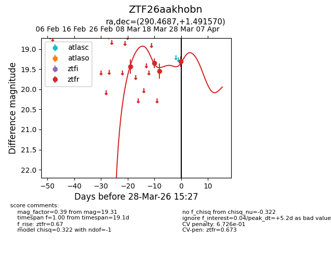
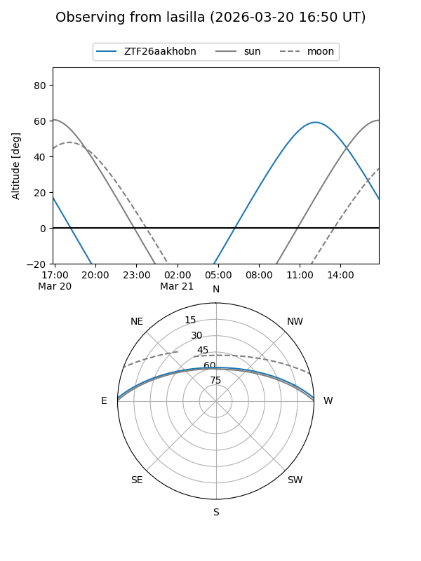
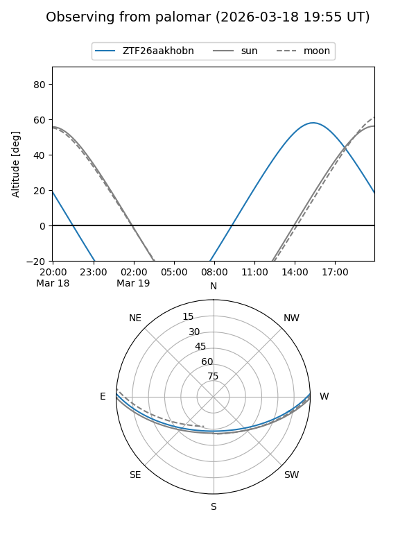
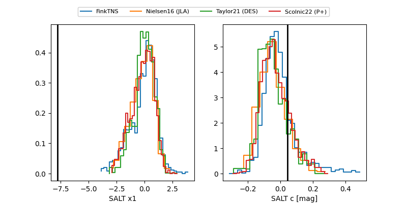

ZTF26aakhobn
Target ZTF26aakhobn at 2026-03-28 15:30
Aliases and brokers:
FINK: link
Lasair: link
ALeRCE: link
alt names
ZTF26aakhobn (ztf,fink_ztf)
Coordinates:
equatorial (ra, dec) = 290.4687,+1.49157
equatorial (HMS+DMS) = 19:21:52.49,+01:29:29.65
galactic (l, b) = (37.7503,-6.08130)
Flags:
likely cv
Photometry:
last ztfr=19.31
4 ztfr detections
Lightcurve

Visibility


Additional plots
